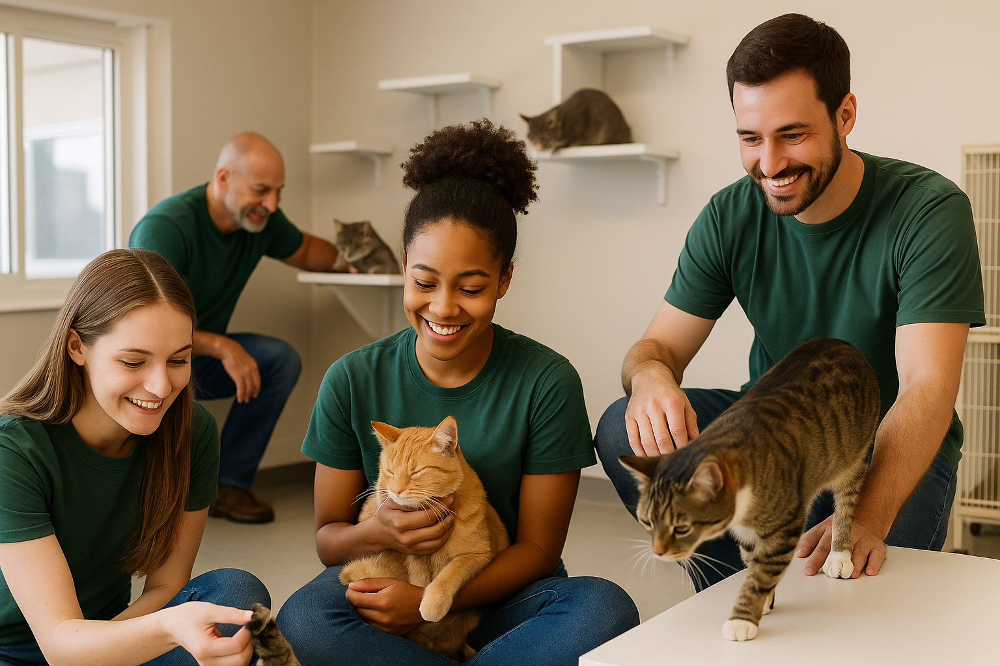
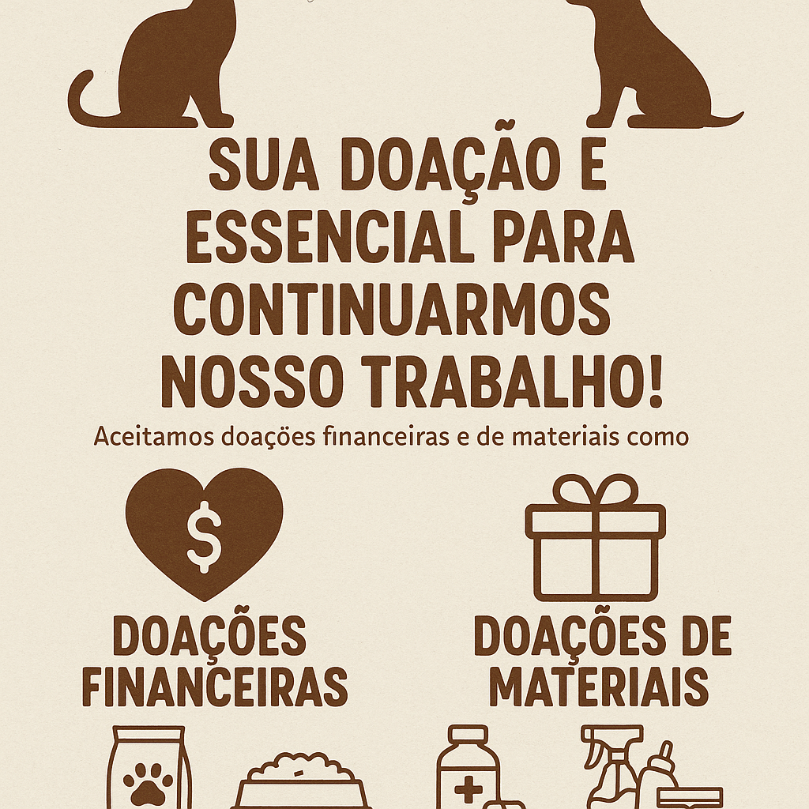

Por que fazer parte da FELINONG?
Ser voluntário na FELINONG é uma oportunidade única de fazer a diferença na vida de gatos resgatados.
Nossos voluntários ajudam em diversas áreas: alimentação, limpeza, cuidados médicos, socialização e eventos de adoção.

Se você ama animais e deseja contribuir com tempo e carinho, venha fazer parte da nossa equipe de voluntários!
Como Doar
Sua doação é essencial para continuarmos nosso trabalho!
Aceitamos doações financeiras e de materiais como ração, areia, medicamentos e produtos de limpeza.

Toda contribuição, por menor que pareça, ajuda a salvar vidas felinas. 💖